Salınım Eğitimi ve Simülasyon
GKÇ İzleme altında kullanılacak bu eğitim sayfası; mevcut salınım dokümanlarındaki iyi fikirleri, README'deki SCADA/PMU analiz akışıyla ve NotebookLM görsellerindeki kavram haritalarıyla tek bir kararlı, sekmeli ve çift temalı HTML sayfada birleştirir.
SCADA uygulamasına uyumlu eğitim sayfası
Bu sekme sayfanın uygulamadaki rolünü tanımlar: canlı Salınım Algılayıcı ekranının yerine geçmez; operatöre modal analiz mantığını ve rapor okumayı öğretir. Tasarım, ekran görüntüsündeki filtre kartı, durum kutuları, mavi aktif sekme, kartlı içerik ve kompakt kontrol yoğunluğunu izler.
Entegrasyon yerleşimi
Bu sayfa ne yapmaz?
Bu ayrım özellikle mock/fallback veri kullanılmayan gerçek analiz akışının eğitim içerikleriyle karışmaması için korunur.
Birleştirilen 3 HTML dokümanından alınan en iyi yönler
| Kaynak | Korunan güçlü yön | Bu sayfadaki karşılığı |
|---|---|---|
| v1 | Kayan pencere, FFT, P-Q-V-f ve sönümleme gibi temel etkileşimli grafik fikri. | PMU Algılama ve P-Q-V-f simülasyon sekmeleri. |
| v2 | Koyu tema, vaka anlatımı, DEF enerji akışı, Prony ve teşhis perspektifi. | Vaka & Teşhis ve BASTS/FBMSWA sekmeleri. |
| Detaylı | README uyumu, SCADA bağlamı, operatör karar destek dili, kabul kriterleri. | Uygulama Bağlamı ve Karar Destek sekmeleri. |
NotebookLM görsellerinden işlenen ana kavramlar
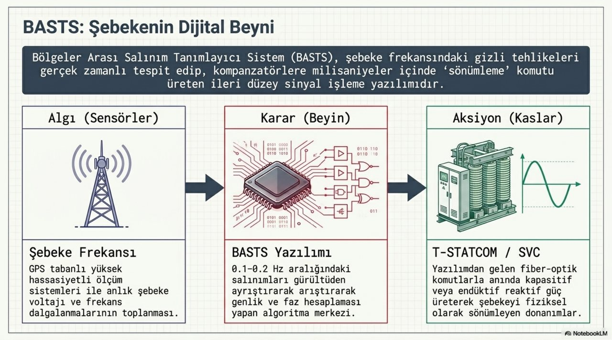
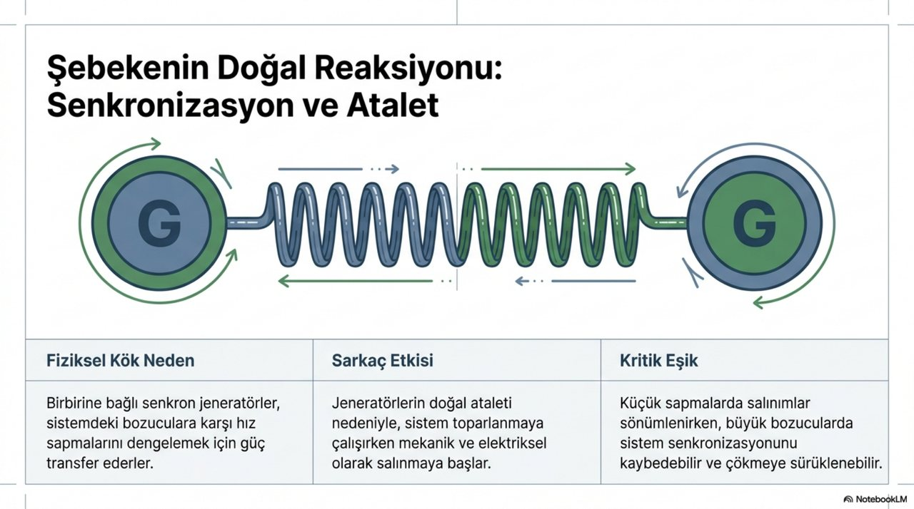
Bu sekmenin sözlüğü
Salınım modları: frekans bandı, kök neden ve risk
Doğal elektromekanik modlar ile dışarıdan zorlanan salınımlar aynı grafik ekranında benzer görünebilir. Ayırıcı ipuçları frekans bandı, damping, mode shape, tekrarlılık ve P-Q-V-f ilişkisi üzerinden okunur.
Bölgeler arası
İki veya daha fazla büyük üretim alanının zayıf bağ hatları üzerinden birbirine karşı salınmasıdır.
Lokal
Tek santral veya ünite grubunun şebekenin geri kalanına karşı sarkaç gibi hareketidir.
Zorlanmış
Periyodik yük, kontrol veya ekipman arızasıyla dışarıdan enerji pompalanır; frekans doğal modla çakışırsa büyür.
SSO / torsiyonel
Şaft, seri kompanzasyon veya evirici kontrol etkileşiminden doğan alt senkron aralık.
Kontrol etkileşimi
Rüzgar/güneş eviricileri, PLL ve şebeke empedansı arasında kontrol modu doğabilir.
Mod seç ve dalga şeklini gör
| Ölçüt | Güvenli | Riskli |
|---|---|---|
| Damping | > %5 | < %3 veya negatif |
| Genlik | Yavaş azalan zarf | Sabit veya büyüyen zarf |
| Coğrafya | Yerel sınırlı | Çoklu PMU'da eş zamanlı |
PDF görsellerinden mod haritası
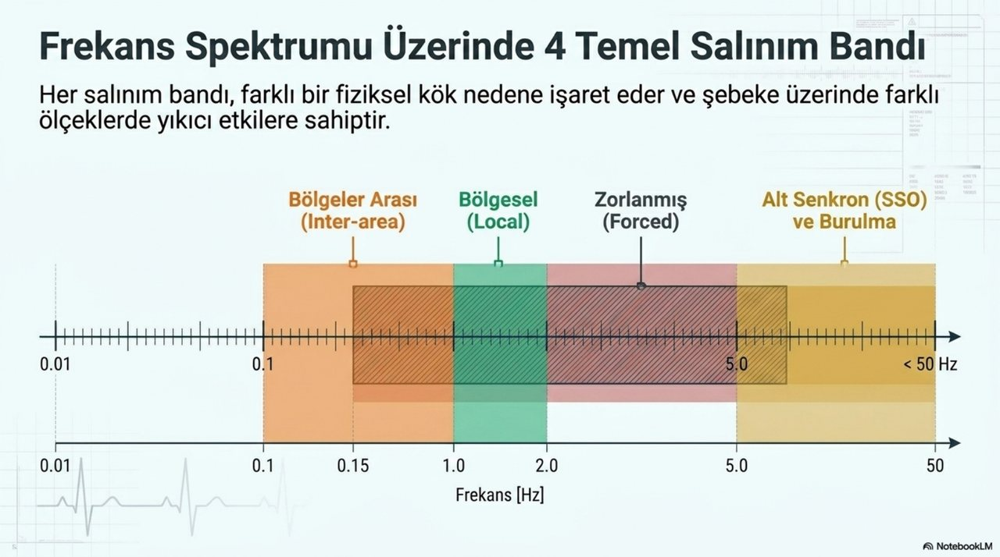
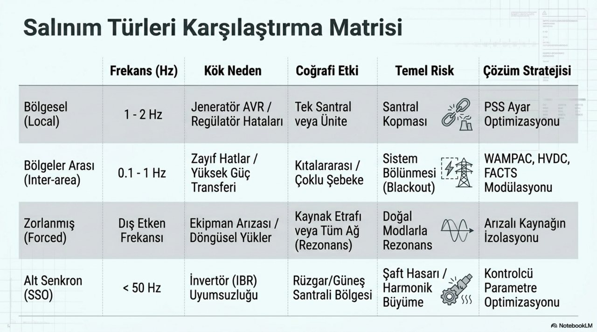
Bu sekmenin sözlüğü
P-Q-V-f: aynı olayın dört ölçümdeki izi
Rotor açısı ve hızındaki salınım, aktif güç akışına; akım ve reaktif güç değişimi, gerilim profiline; üretim-tüketim dengesizliği ise frekans sapmasına yansır. Bu nedenle eğitimde dört grafik aynı zaman ekseninde okunur.
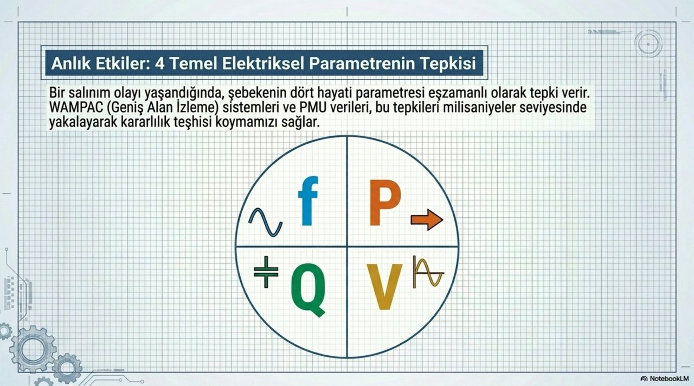
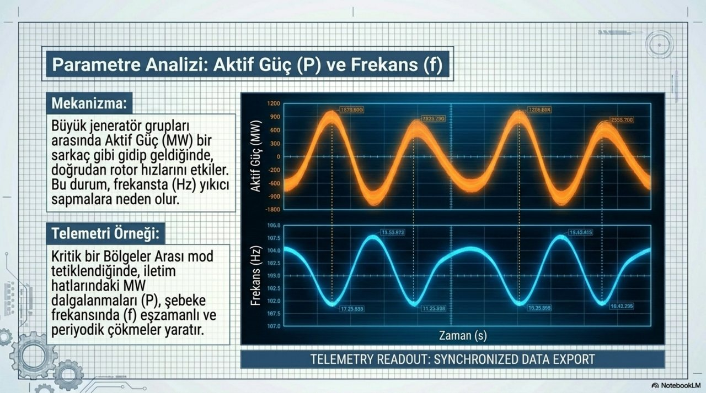
Bu sekmenin sözlüğü
Sönümleme, genlik ve salınım enerjisi
Kararlı bir sistemde zarf küçülür; düşük sönümde salınım uzun sürer; negatif sönümde genlik büyür. Operatör için kritik okuma: frekans tek başına yeterli değildir, genlik ve damping ile birlikte yorumlanmalıdır.
Parametreleri değiştir
ζ ≈ -σ / sqrt(σ² + ω²), ω = 2πf
Operatör okuması
| DR | Yorum | İşletme anlamı |
|---|---|---|
| > %5 | Yeterli | Bozucu etki sonrası sistem toparlanır. |
| %3-%5 | İzle | Transfer artışı veya kontrol ayarı risk yaratabilir. |
| 0-%3 | Zayıf | Geniş alan sinyalleri ve bağ hattı limitleri incelenir. |
| < 0 | Kritik | Enerji salınıma ekleniyor; büyüme eğilimi vardır. |
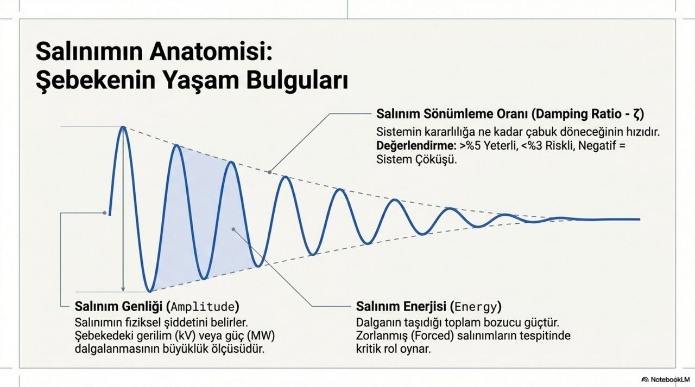
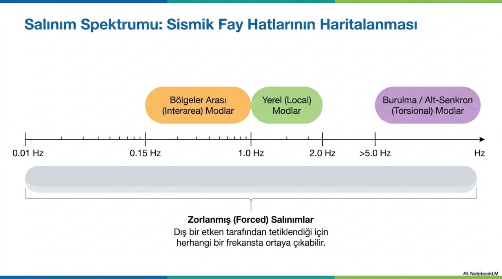
Bu sekmenin sözlüğü
PMU verisinden modal bulguya: kayan pencere, FFT, Prony ve DMD
Canlı sistemde veri sonsuz akar. Algoritma yalnızca pencere içindeki örnekleri inceler, frekans bileşenlerini çıkarır, mod sınıfını ve damping değerini üretir, ardından bulgu/rapor diline dönüştürür.
Modal analiz boru hattı
Parametre etkisi
Prony ve DMD neden eklenir?
FFT baskın frekansı ve genliği hızlı gösterir; Prony yöntemi sönümlü sinüzoidlerin genlik, faz, frekans ve damping parametrelerini kestirir. DMD ise çok sinyalli PMU verisinden modal şekil ve geniş alan desenini çıkarmaya uygundur. Bu sayfada hesaplamalar eğitim amaçlı basitleştirilmiştir.
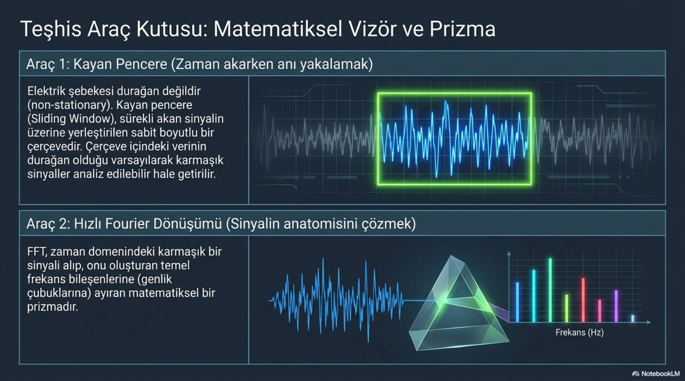
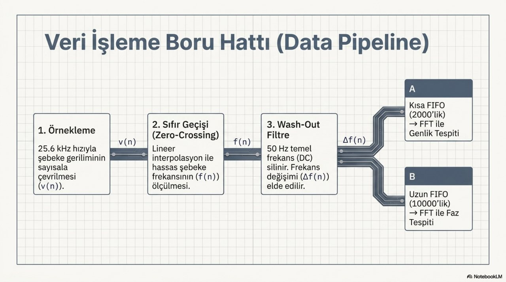
Bu sekmenin sözlüğü
BASTS / FBMSWA: 0.1-0.2 Hz bandını kaçırmamak
NotebookLM dokümanlarında anlatılan BASTS yaklaşımı, 0.1-0.2 Hz gibi çok yavaş bölgeler arası salınımları gürültü ve DC bileşenden ayırmak için çift pencereli FFT mantığını kullanır: kısa pencere hızlı genlik tespiti, uzun pencere faz yönü sağlar.
Wash-out
50 Hz temel/DC benzeri yavaş bileşen çıkarılır; analiz edilecek salınım kalır.
Kısa pencere
Genlik eşiği aşıldı mı sorusuna hızlı cevap verir.
Uzun pencere
Faz yönünü ve müdahale kipini daha güvenilir belirler.
Aksiyon
Kapasitif (+1), endüktif (-1) veya bekleme (0) komutu üretilir.
Eşik ve faz simülasyonu
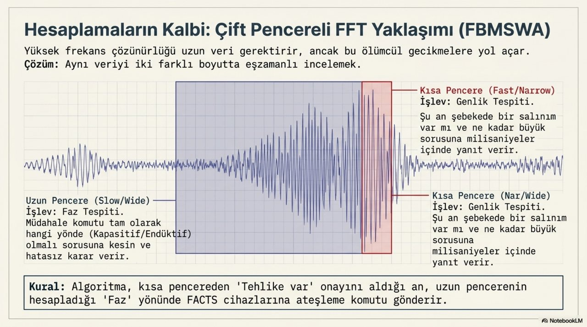
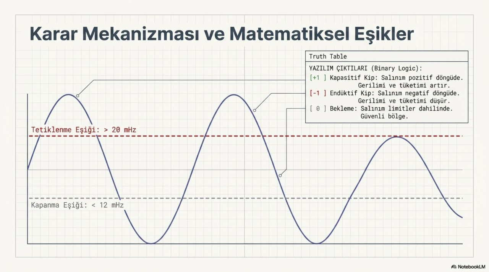
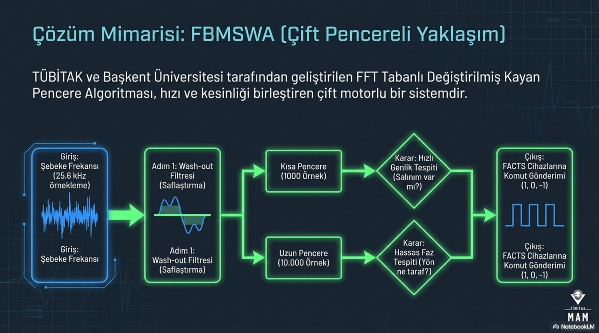
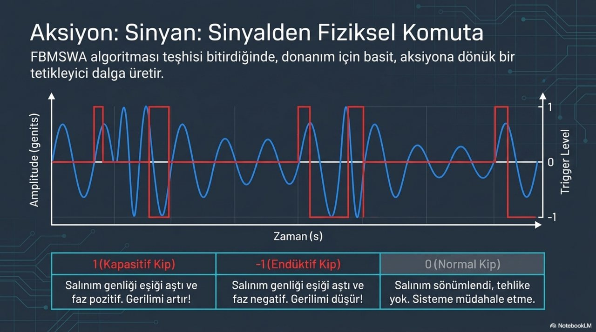
Bu sekmenin sözlüğü
Vaka analizi: bulgu, kaynak ve müdahale önceliği
Operatörün görevi yalnız frekansı okumak değil; olayın lokal mi geniş alan mı, doğal mı zorlanmış mı, sönümlü mü büyüyen mi olduğunu anlamaktır. Bu sekme vaka kartları, mode shape ve DEF enerji fikrini birleştirir.
Türkiye - ENTSO-E bağlamı
Çok yavaş bölgeler arası salınım, klasik PSS kör noktasına düşebilir. 0.1-0.2 Hz bandında özel izleme gerekir.
WECC 1996 örneği
Zayıf sönümlü inter-area mod, büyük güç transferleri altında geniş çaplı kesintiye yol açabilecek risk gösterir.
IBR ve rüzgar bölgeleri
Evirici kontrol parametreleri ve şebeke empedansı alt senkron kontrol etkileşimlerine neden olabilir.
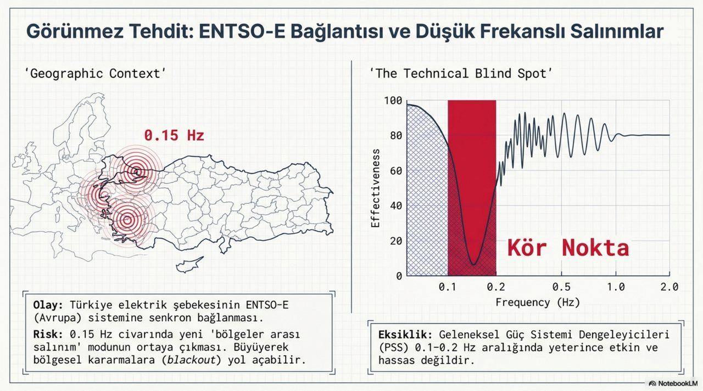
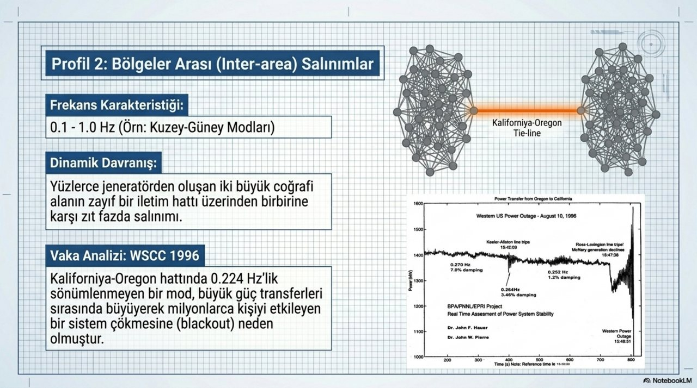
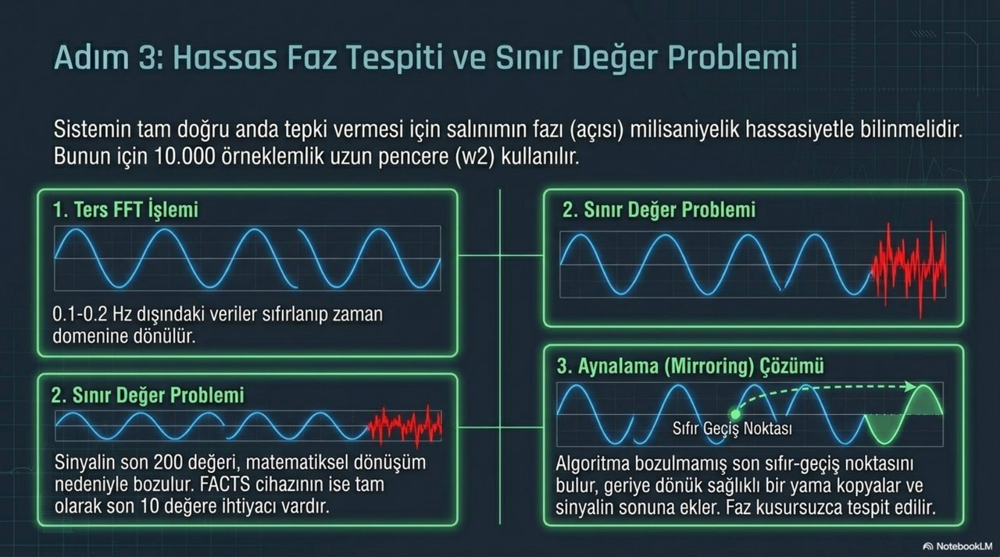
Bu sekmenin sözlüğü
Operatör karar destek dili ve kabul kontrolü
Canlı Salınım Algılayıcı raporu; ham grafikten ayrı olarak metrik, mod, olay zamanı, süre, salınım frekansı, RMS/genlik, damping ve karar cümlesi üretir. Eğitim sayfası bu çıktıyı nasıl okuyacağınızı öğretir.
Örnek karar destek cümlesi
| Seviye | Kural | UI dili | Aksiyon |
|---|---|---|---|
| Normal | Genlik düşük, DR > %5 | Salınım yok / sönümlü | İzlemeye devam et. |
| İzle | DR %3-%5 veya kısa olay | Bulgu adayı | Aynı olay diğer metriklerde var mı kontrol et. |
| Kritik | DR < %3, negatif veya büyüyen genlik | Kritik bulgu | Bağ hattı transferi, PSS/FACTS/HVDC ve koruma etkisi incelenir. |
| Tanısal | 5 Hz üstü / Nyquist sınırı | Destek dışı uyarı | Daha yüksek örnekleme ve özel analiz gerekir. |
Hızlı quiz
Soru: 0.16 Hz, 100 saniyeden uzun, üç PMU'da benzer genlik ve iki bölgede ters faz görülüyorsa en olası sınıf nedir?
Canlı uygulamaya dönüştürme kontrol listesi
| # | Kriter |
|---|---|
| 1 | HTML dili Türkçe, karakter seti UTF-8 kalmalı. |
| 2 | Light/dark tema uygulamanın mevcut tema state'iyle eşleştirilmeli. |
| 3 | Eğitim simülasyonu gerçek Salınım Algılayıcı veri akışına bağlanmamalı. |
| 4 | Grafiklerde zaman ekseni ve birimler açık yazılmalı. |
| 5 | Her bulguda mod, süre, frekans, genlik ve DR ayrı gösterilmeli. |
| 6 | PDF/Yazdır çıktısı tüm uygulamayı değil yalnız eğitim içeriğini basmalı. |
Kaynak görsel kitaplığı
Zip içinde görseller assets/ klasöründe, HTML ise kök dizindedir.